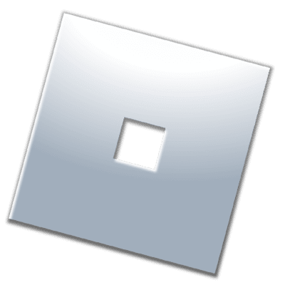

What would you
like to make?
Find a script or model, follow the video, and put it in the right place in Studio.
Roblox tutorials
No tutorials match that search.
How to Make Custom
Sprint Animations
Set up custom idle, walk, sprint and jump animations, with optional sprint and stamina settings.
Loading script…Watch the video tutorial
See how the script works and where to put it in Roblox Studio.
How to Make a Day and Night
Cycle
Make the in-game clock move through a full day in five minutes. Change the settings at the top of the script to customise it.
Loading script…Watch the video tutorial
See how to add the cycle to your Roblox Studio game.
How to Make a
Redeem Codes System
Add a redeem codes system to your Roblox game using the model from the Creator Store.

Redeem Codes System
Get the model used in this tutorial from the Roblox Creator Store.
Watch the video tutorial
See how to set up the redeem codes system in Roblox Studio.
How to Make a
Welcome Badge
Award a badge to players when they join your experience.
Watch the video tutorial
See how to set up the welcome badge in Roblox Studio.
How To Make Custom
Tool Animations
Use the Roblox model and video to set up custom animations for tools in your experience.
Custom Tool Animations
Get the model used in this tutorial from the Roblox Creator Store.
Watch the video tutorial
See how to set up custom tool animations.
How To Make An
Objective System
Use the ready-made objective system model, then follow the video to add it to your experience.
Objective System
Get the model used in this tutorial from the Roblox Creator Store.
Watch the video tutorial
See how to add an objective system to your Roblox experience.
How To Make a Customisable
Sprint + Stamina System
Add sprinting with Left Shift, a stamina bar, and settings for movement speed and stamina recovery.
Loading script…Watch the video tutorial
See how to set up sprinting and stamina.
How To Make a
Customisable Main Menu
Use the ready-made main menu model, then follow the video to customise it for your experience.
Main Menu GUI
Get the model used in this tutorial from the Roblox Creator Store.
Watch the video tutorial
See how to set up and customise your main menu.
How To Make an
Enemy NPC
Use the ready-made enemy NPC model, then follow the video to add it to your experience.
Advanced Enemy NPC
Get the model used in this tutorial from the Roblox Creator Store.
Watch the video tutorial
See how to add an enemy NPC to your game.
How To Make A
Gamepass Give A Tool
Use one LocalScript to prompt the purchase and one server Script to give the tool to gamepass owners.
Loading script…How To Fix Your
Mobile GUI
Use the AutoScale Lite plugin to help adjust your Roblox interface for mobile screens, following along with the video.
AutoScale Lite
Get the plugin used in this tutorial from the Creator Store.
Watch the video tutorial
See how to use AutoScale Lite to fix a mobile GUI.
How to Make a Crouch
System
Use the ready-made crouch system model, then follow the video to add it to your Roblox experience.
Crouch R6/R15
Get the model used in this tutorial from the Roblox Creator Store.
Watch the video tutorial
See how to use the crouch system in Roblox Studio.
How To Make Custom Roblox
Animations
Use the script with the mobile-supported model to set custom idle, walk, and jump animations.
Loading script…Custom Animations System (Mobile Supported)
Get the model used in this tutorial from the Roblox Creator Store.
Watch the video tutorial
See how to use the custom animations system in Roblox Studio.
How To Make Custom Sprint
Animations(Shift / Ctrl)
Hold Shift or Ctrl to sprint. Replace the placeholder IDs with your idle, walk, sprint, and jump animation IDs.
Loading script…Watch the video tutorial
See how to set up Shift and Ctrl sprinting with custom animations.